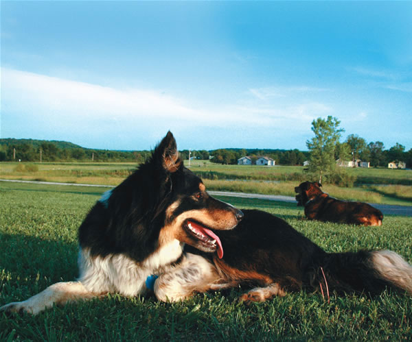
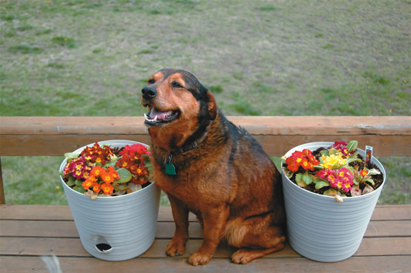
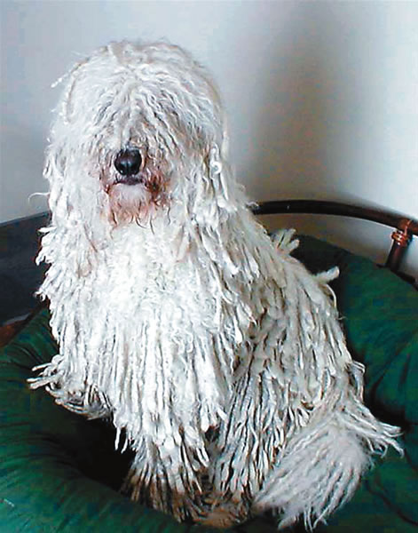
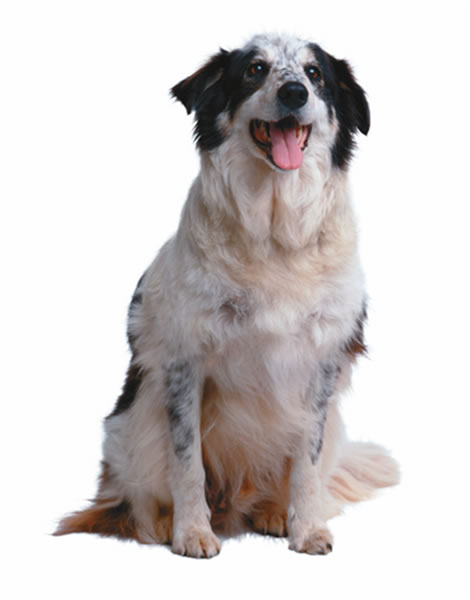
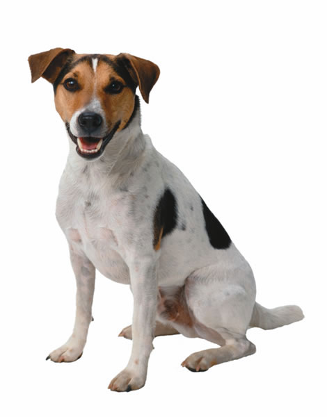
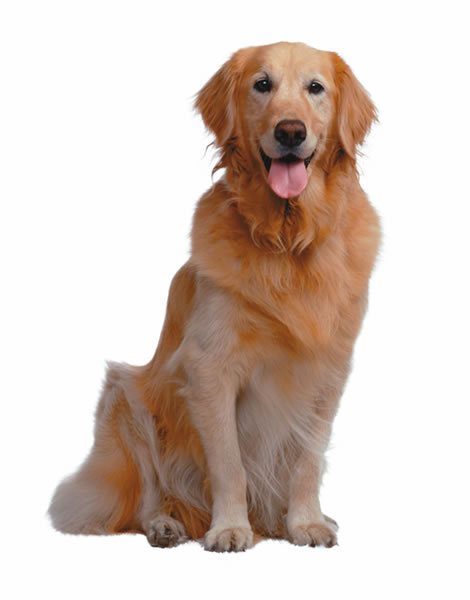
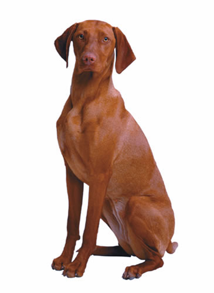
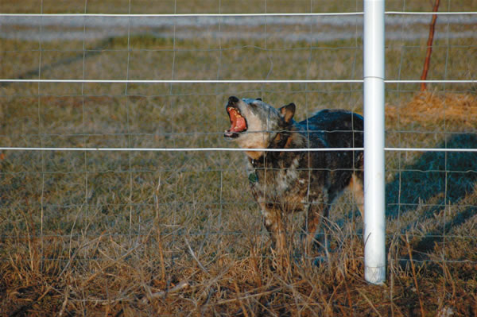

Knowing how to train a guard dog can be a valuable skill in providing protection for your home and family. My home security system is large and black - and she pants when its hot and sheds hair every spring. In return for regular feeding, periodic veterinary care and grooming, I get a beloved companion pet that barks loudly when any strange vehicle enters my driveway. My dog also chases opossums from my deck and rabbits from my garden. But mostly, my watchdog makes me feel safe.
I am not operating under an illusion: According to the U.S. Department of Justice, 16 percent of American households were victims of property crime in 2003. Especially in rural areas, the theft pattern goes like this: Thieves make a quick visit to a house or farm to check for security, then return later to take what they want. But a barking dog often turns off potential burglars at the scouting phase.
It's no surprise that, of the 68 million pet canines in the United States, most are expected to perform some kind of guard duty. Watchdogs look, listen and bark to sound the alert that something unusual is happening in their territory. After that, humans take over.
Dogs have performed this duty for thousands of years. In Tibet, the little Lhasa apso, called the "bark lion sentinel dog," was bred to work as an indoor watchdog. In Belgium, schipperkes earned the nickname "little captain of the boat" because of their work as ship watchdogs.
"Dogs have coevolved with humans for at least 12,000 years," says veterinarian Andrew Luescher, director of the Animal Behavior Clinic at Purdue University. "Dogs are better than any other animal at reading human body language, and they are the only animals that can follow something when you point it out to them."
Wayne Hunthausen, a veterinarian and co-author of the Handbook of Behavior Problems of the Dog and Cat, says most dogs - including mixed breeds - can be trained as good watchdogs. The exceptions are calm, less-reactive breeds such as bloodhounds or Newfoundland dogs.
"You want a dog that will pick up on unusual things and then discriminate as to what's unusual," Hunthausen says. "Dogs that have been bred for territorial reactivity - Scottish terriers, Airedales and standard poodles - make good watchdogs, but so do many others."
Also keep in mind that some dogs are not content only as watchdogs. When they are not given appropriate work, herding dogs such as border collies or Australian shepherds can be extremely excitable, which is not a good trait in a watchdog. Predatory aggression is another bad trait that can be present in some aggressive breeds. But Luescher says even naturally friendly dogs can be trained as good watchdogs. "Dogs are quite good at realizing when something is amiss."
Some insurance companies charge higher premiums or even deny coverage to homeowners who have specific dog breeds, such as those listed below. Owners of mixed breeds may have to provide veterinarian statements about the dog's predominant bloodline before new policies can be issued. The American Kennel Club's website has resources for dog owners who are looking for homeowner's insurance.
Akita
Alaskan malamute
Chow
Doberman pinscher
German shepherd
Pit bull
Presa Canario
Rottweiler
Siberian husky
Staffordshire bull terrier
|
 BRYAN WELCH The best guard dog doesn’t have to be a large, imposing breed - almost any dog can be trained to signal something suspicious. This diligent border collie keeps lookout over a homestead in Lawrence, Kan. |
 BRYAN WELCH This Rottweiler mix has a loud bark and a friendly smile. |
 JOE GLICKMAN Komondor |
|
 G.K. & VIKKI HART/PHOTODISC Border collie |
 G.K. & VIKKI HART/PHOTODISC Jack Russell terrier |
 G.K. & VIKKI HART/PHOTODISC Golden retriever |
|
 G.K. & VIKKI HART/PHOTODISC Vizsla |
 BRYAN WELCH Dogs that bark at an unusual visitor or sound help deter potential prowlers and harmful animals. |
|